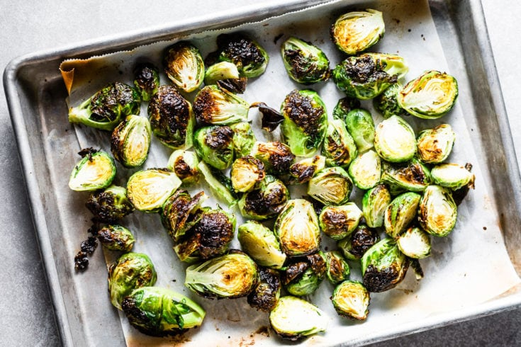

Brussel sprouts

Desription
These crispy brussel sprouts are easy to make and sure to
be a crowd pleaser!
Ingredients
- Brussel sprouts
- 2 tablespoons of Olive oil
- 3-5 cloves of Garlic
- Salt and pepper to taste
Steps
- Preheat oven to 425 degrees
- Rinse brussel sprouts and cut them in half
- Mince the garlic
- Add the brussel sprouts, garlic, and the rest of the ingredients
to a bowl and toss until coated and transfer to a baking sheet
- When the oven is preheated bake the brussel sprouts for 25 minutes
or until golden brown, toss them halfway through cooking time